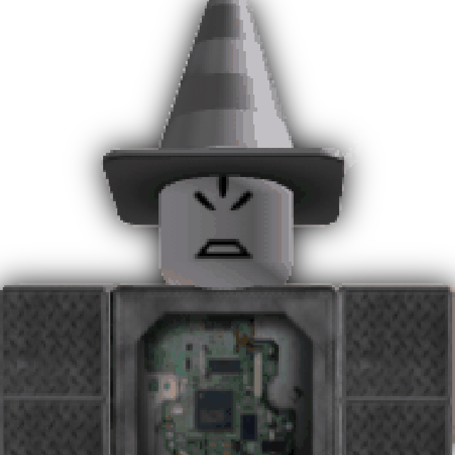
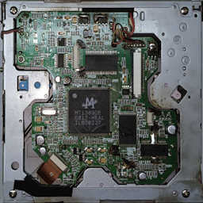

hello, I am a young guy interested in microelectronics, soldering, gamedev, C++ development and design.
my fav music genres are atmospheric/intelligent dnb, Sonic CD-type, Deltarune OST-like and tracker (demoscene) music.
my hobbies are: sodlering, microelectronic engineering, C++ coding, design, building, scripting and UI design in Roblox Studio
my fav aesthetics are: industrial hell, neo-industrialism and liminalism
my fav music genres are atmospheric/intelligent dnb, Sonic CD-type, Deltarune OST-like and tracker (demoscene) music.
my hobbies are: sodlering, microelectronic engineering, C++ coding, design, building, scripting and UI design in Roblox Studio
my fav aesthetics are: industrial hell, neo-industrialism and liminalism
my favourite programming langs: python, luaU, C++
progs I use in my projects: Arduino IDE, OpenMPT, Visual Studio (2022), Paint.NET (not to be confused with MS Paint), Roblox Studio, Blender, Inkscape, FreeCAD, UltiMaker Cura
my favourite games are: Yume 2kki, Yume Nikki, Deltarune, Team Fortess 2, Half-life, Half-life 2, Half-life 2: Episode One, Half-life 2: Episode Two, Half-life: Opposing Force, Half-life: Blue Shift, Black Mesa, The Stanley Parable, Outcore, and, of course Minecraft (And especially Create, the mod)
progs I use in my projects: Arduino IDE, OpenMPT, Visual Studio (2022), Paint.NET (not to be confused with MS Paint), Roblox Studio, Blender, Inkscape, FreeCAD, UltiMaker Cura
my favourite games are: Yume 2kki, Yume Nikki, Deltarune, Team Fortess 2, Half-life, Half-life 2, Half-life 2: Episode One, Half-life 2: Episode Two, Half-life: Opposing Force, Half-life: Blue Shift, Black Mesa, The Stanley Parable, Outcore, and, of course Minecraft (And especially Create, the mod)
